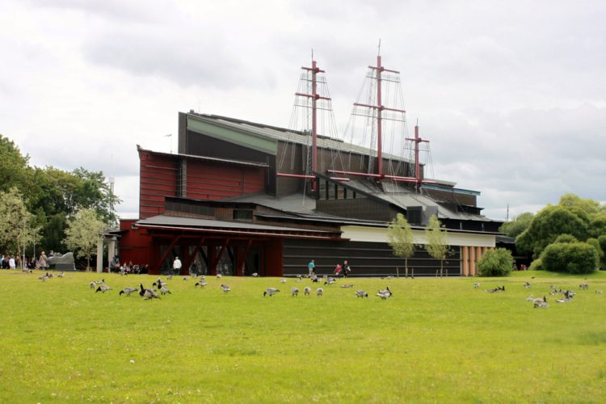
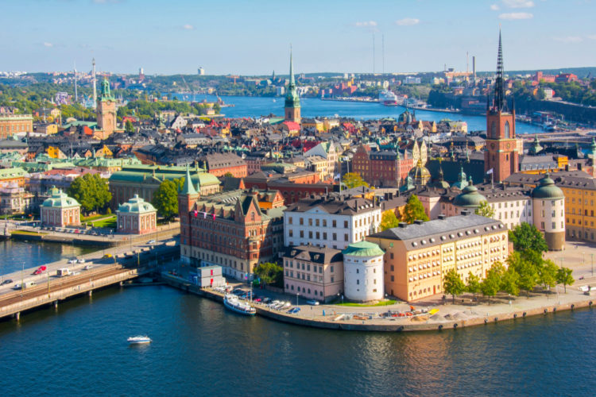

Достопримечательности Швеции:
Планируете путешествие в северное государство, расположенное на Скандинавском полуострове? Тогда вам просто необходима информация о том, что посмотреть в Швеции. Для тех, кто не в курсе, государство граничит с Норвегией, Финляндией, а также имеет отношение к Дании. Достопримечательности Швеции все без исключения заслуживают внимания.Большая часть страны находится в зоне умеренного климата, поэтому в ее южной части погодные условия теплее, а осадков здесь выпадает относительно мало. Все это создает идеальные условия для знакомства с лучшими достопримечательностями.
1. Вадстенский замок

Начать знакомство стоит с впечатляющего напоминания о славной истории государства. На его территории описываемая крепость является одной из самых старинных, ведь строить ее начали еще в 1545 году. Далеко не всем туристам известно, что изначально Вадстенский замок имел 4 круглых башни, 3 жилых здания из камня, несколько хозяйственных построек. В определенный момент необходимость в фортификационных сооружениях отпала, поэтому они были скрыты. Решение превратить постройку в исторический памятник было принято в XX веке, для чего были проведены масштабные реставрационные работы.
Музей Васа

Достопримечательности Швеции не могут не удивлять своим разнообразием, уникальностью. Ярким доказательством тому является музей в виде корабля, который до наших дней сохранился с XVII века. До сих пор он считается гордостью шведского морского флота. Предположительно затонул он от того, что были произведены не совсем правильные расчеты, украшений и золота оказалось слишком много. Судно оказалось на дне Стокгольмской гавани во время своего первого плавания, что произошло в 1628 году.
3. Старый город Гамла Стан

Раздумываете, что посетить в Швеции? Загляните в исторический центр Стокгольма, который до 80-х годов носил название Город между мостами. Основан он был еще в XIII веке, о чем несложно догадаться по его средневековым дорожкам, мощеным улочкам, домам в стиле северогерманской готики. В самом центре есть живописная площадь, известная под названием Сторторгет. В 1520 году именно на ней датский король жестоко расправился с шведскими дворянами. Еще множество достопримечательностей Швеции сосредоточено в Старом городе Гамла Стан.